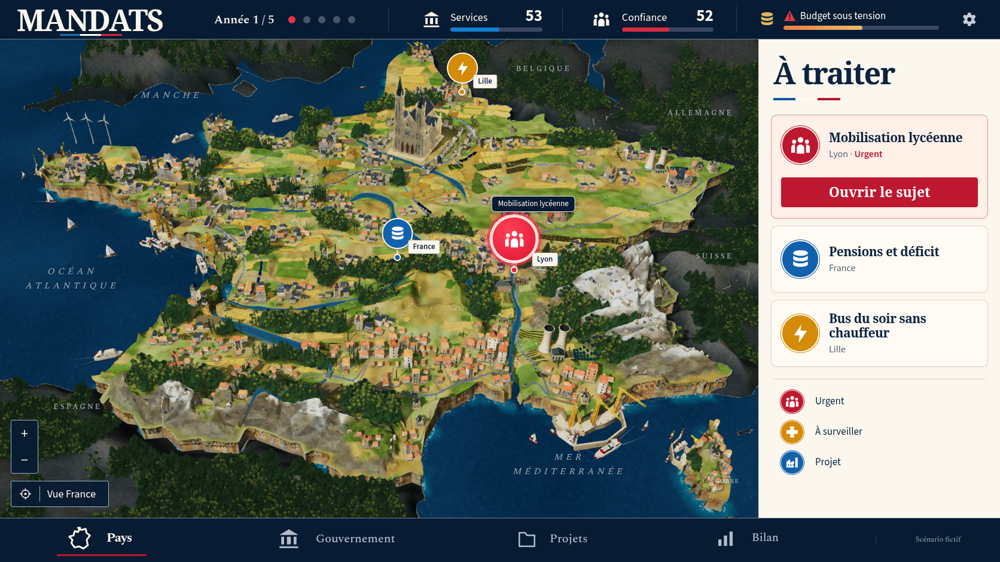
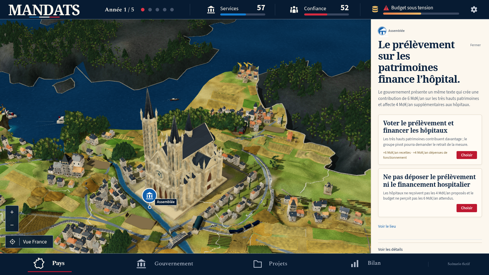
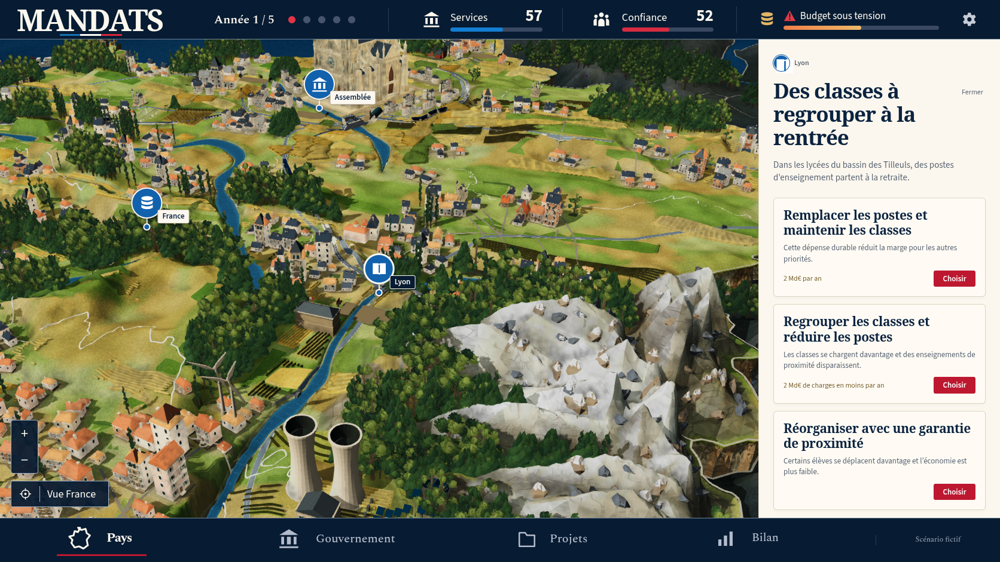
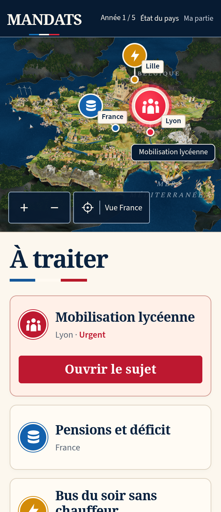
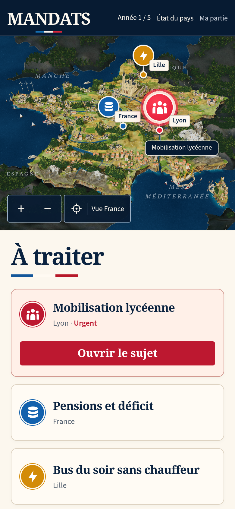

MANDATS : comparaison 48
Le diorama reste en dessous de la référence. La reconstruction continue. La PR 194 reste en brouillon ; les contrôles techniques ne constituent pas une validation artistique.
La vue comparée provient d’une vraie décision scolaire dans la partie v12. Les chiffres et événements fictifs de la référence ne sont pas injectés dans le jeu.


Référence confirmée.Jeu réel, obtenu avec ses contrôles.
| Partie | Modification réelle | Différence encore visible |
|---|
| Architecture | Maçonnerie plus fine et moins contrastée, avec les sommets, normales, indices et UV des 72 géométries conservés. La maison CC0 est recomposée depuis sa source archivée. | Les bourgs et les détails restent moins riches que dans la référence. |
| Montagnes | Crêtes nord alpines abaissées et élargies. La neige atteint davantage les versants hauts et raides ainsi que les sommets pyrénéens. | Des pans restent larges et facettés ; les rochers et la composition ne reproduisent pas encore toute la finesse de la maquette. |
| Méditerranée | Fin du Rhône élargie après les fondations protégées et transition des rives adoucie. Une petite ferme de rive est retirée du plan commun ; les propositions de déplacement refusées sont supprimées. | L’embouchure reste plus encaissée et les falaises plus régulières que dans la référence. |
| Eau et trains | Écume côtière plus fine et rames bleu/ivoire. Les parcours, la géométrie et les décisions réelles restent conservés. | Le détail de l’activité et des matériaux demeure en cours de reconstruction. |

Cathédrale conservée avec ses vraies ouvertures et textures.
Lyon puis un clic sur Réduire la carte.
320 × 740, DPR 2, vraie décision scolaire.
390 × 844, DPR 2, vraie décision scolaire.Preuves et limites
Douze captures natives de production enregistrent zéro erreur de page, console, requête ou HTTP ; les empreintes des réponses JS/CSS correspondent au build figé. Les deux vues mobiles DPR 2 restent sans débordement horizontal, avec des rasters 640 × 562 et 780 × 642. La décision scolaire et les deux étapes hospitalières viennent des choix réellement sauvegardés.
Le check complet passe 1 082 vérifications et les trois cibles TypeScript. La suite 3D originale complète passe 23 cas actifs et neuf omissions configurées en 18,6 minutes ; la suite sociale passe 13 cas et trois omissions configurées en 11,9 minutes. Zéro échec ou test instable. Les nouvelles parties WebKit originales passent en portrait et paysage. Aucun test, délai, retry, worker ou omission n’a été modifié.
Deux fabrications reproduisent exactement le terrain et son manifeste : 17 maillages, 292 639 triangles, 336 961 sommets, huit matériaux et 10 028 981 octets compressés. L’architecture est recuite depuis sa recette ; les autres modèles, le cube d’éclairage et les PNG de terrain sont conservés.
Les sections basses des 2 544 troncs français contrôlés restent soutenues, sans sondage manquant ni garde au-dessus de 0,004 ; leur garde maximale vaut −0,00099947. Les bases des 188 rochers atteignent −0,000124429. Les seize monuments observés ne présentent aucun recouvrement horizontal de canopée. La rénovation hospitalière réelle est financée puis livrée sur un terrain déjà dégagé, avec zéro arbre masqué : ce parcours ne prouve pas la restauration d’un arbre chevauchant un chantier. Les 72 géométries d’architecture et leurs UV, indices, normales et dimensions restent identiques à la passe 47. Ces observations ne certifient pas toutes les collisions ou la fluidité matérielle.
La CI précédente, sur 2574f7c, valide le workflow général, story, board, launch et canonical. La suite 3D originale distante passe 23 cas et neuf omissions en 20,2 minutes ; la suite sociale conserve un échec du parcours à quatre imports à sa limite originale de 180 secondes, avec 12 réussites et trois omissions en 12,4 minutes. Aucun test, délai ou réglage n’est modifié pour contourner cet échec. Ces résultats concernent la passe 47.
Manifeste · Captures natives · Build · Appuis des rochers · Monuments et canopées · CI précédente · Implantation des troncs